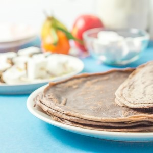

Crêpes au chocolat

C’est bientôt la chandeleur (j’adore vraiment beaucoup la chandeleur, car j’adore vraiment beaucoup (trop) les crêpes mais ça je vous l’ai déjà dit ici). Pour l’occasion, j’ai testé la recette des crêpes au chocolat et je suis conquise!
Très honnêtement j’étais un peu sceptique en préparant ces crêpes car je n’en avais jamais goutées et j’avais un peu peur que le goût du chocolat soit un peu trop prononcé mais finalement il n’en est rien. Vous pouvez « doser » assez facilement la quantité de chocolat que vous allez mettre dans vos crêpes et donc leur goût plus ou moins chocolaté… Pour cela, il suffit de prendre votre recette de crêpes fétiches (une des miennes est ici) et d’enlever de la farine pour la remplacer par le meilleur cacao que vous pouvez trouver (plutôt facile non?)!! Avec cette recette je ne me suis pas arrêtée là car comme pouvez le voir dans la vidéo je ne me suis pas contentée de les tartiner ou de les saupoudrer de sucre. En effet, j’ai fait de la moitié de mes crêpes au chocolat de délicieuses petites brochettes avec des chamallows aux amandes (eux aussi fait maison) et franchement c’était un régal (si vous avez des enfants, ils devraient adorer)!!! Les crêpes au chocolat sont roulées puis tartinées de spéculoos et enfin découpées en petits roulés pour former la brochette (c’est facile, ludique, ça change et surtout c’est trooop bon!). Avec le reste des crêpes j’ai fait des petits animaux en m’aidant de fruits, de pâte à tartiner et nous nous sommes régalés! Je vous laisse avec la recette et n’hésitez pas à me dire ce que vous en pensez!!
Ingrédients
- Farine - 275g
- Cacao en poudre - 25g
- Sucre - 2càs
- Lait - 500ml
- Beurre - 15g
- Sel - 1 pincée
- Oeufs - 4 oeufs
Instructions
Les tips de la communauté
Crêpes gourmandes très appréciées avec vidéo charmante. Les testeurs louent les explications claires et testent des variantes mineures. La vidéo apporte un plus apprécié des lecteurs.
Astuces
- Ajouter plus de chocolat que la recette si on aime les crêpes très gourmandes
- Possible de faire sans repos de pâte et avoir un bon résultat avec des crêpes moelleuses
Variantes suggérées
- Ajouter du chocolat supplémentaire par rapport à la recette